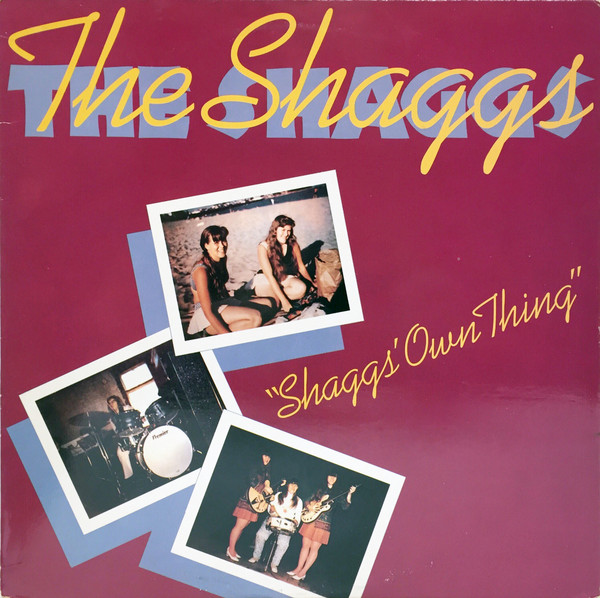
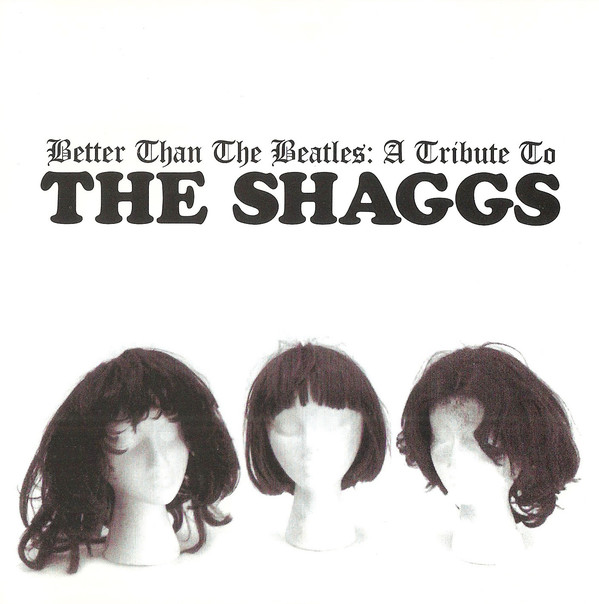
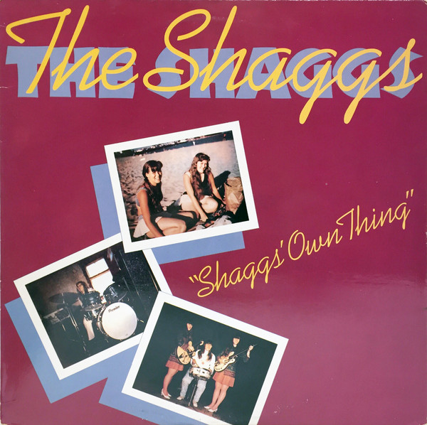
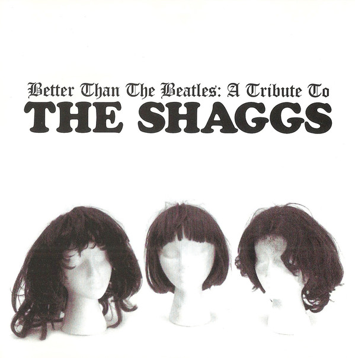

A Prophecy Foretold
A musical force seen in a palmreading by the cast's grandmother, The Shaggs were an outsider art ensemble the likes of which modern society had never seen.
 



Heaven Sent Talents
Hacked-at drumbeats, whacked-around chords, and songs with little to no meter masterfully crafted to expand the listener's pre-conceived notions of talent, originality, and ability.
Worlds Traveled
Born, raised, and currently flourishing in the great state of New Hampshire.
Collaborations
While never formally working with any other artists, their work inspired a full tribute album featuring the talents of Ida, Optiganally Yours, R. Stevie Moore, Deerhoof and Danielson Famille.
Highest Praise
Kurt Cobain ranked Philosophy of the World No. 5 on his 50 best albums list.